도깨비의세계 순위 뒤집힌 도술 조합 추천, 사냥 인기 4유형·PvP 현황 10월 21일 개편 후 10월 22일 기준
10월 21일(수) 점검으로 도술이 하향까지 포함해 전면 개편됐죠~ 하루 지난 10월 22일(목) 오전, 깨비지지 유저 추천 순위는 통째로 뒤집혀 있었어요.
결론부터 말씀드리면 기동 광역이 빠진 자리를 주술·기만 광역이 채웠고, 단일은 여전히 절명+저격이에요. PvP는 아직 정답 조합이라 부를 근거가 없답니다.
기준은 10월 22일 오전 깨비지지 도술 빌더 유저 추천 중 개편 뒤에 등록된 322개인데요, 개편 하루 뒤 목록이라 바뀔 수 있고 추천 수는 인기 지표일 뿐 성능 검증이 아니랍니다. 공식 공지 원문은 열리지 않아서 공지의 초 단위·퍼센트 수치는 싣지 않았습니다.
공식이 확정한 건 뭐고 아직 검토 중인 건 뭔가요?
공식이 확정한 건 하향까지 포함한 전면 개편과 초기화이고, 기동 선택 상자 추가 지급은 아직 검토 단계예요.
| 구분 | 내용 | 근거 |
|---|---|---|
| 공식 확정 | 하향 포함 전면 개편, 각성만 빼고 강화·개방·돌파 초기화, 쓴 요령서는 합친 수만큼 선택 상자로 환급 | 공식 라이브 |
| 공식 확정 | 기동은 영력 획득을 줄인 추격형, 파멸은 재사용 대기시간 대폭 감소, 주술은 터지는 피해 쪽, 강타·파멸 사용성 상향, 강인·헌신 역할 강화, 황무지 채널당 입장 인원 40% 축소 | 공식 라이브 |
| 공식 검토 중 | 기동을 골랐던 도사에게 선택 상자 추가 지급 | 공식 라이브(10월 20일) |
| 커뮤니티 의견 | 조합이 좋다거나 아쉽다는 평가는 전부 이 칸 | 커뮤니티 후기 |
개편 전과 비교하면 인기 도술 순위는 어떻게 달라졌나요?
10월 19일 31.9%였던 기동은 0.7%로 내려가고, 주술(31.3%)과 기만(19.6%)이 그 자리를 차지했네요.
| 스타일(궁극기) | 10월 19일 | 10월 22일 | 흐름 |
|---|---|---|---|
| 기동(연속 쇄도) | 31.9% | 0.7% | ▼ 거의 사라짐 |
| 주술(신내림) | 2.0% | 31.3% | ▲ 1위 |
| 절명(암습) | 18.6% | 21.2% | 유지 |
| 기만(회전하는 칼날) | 3.2% | 19.6% | ▲ 3위 |
| 파멸(대폭발) | 22.2% | 11.3% | ▼ 절반 |
| 연타(폭주) | 20.0% | 8.3% | ▼ |
| 강타(천벌) | 0.0%(등록 1건·추천 0) | 4.8% | ▲ |
깨비지지 기준 · 10월 19일은 10월 14~19일 누적 158개(21시 30분 무렵 조회), 10월 22일은 개편 뒤 하루치 322개(오전 조회) · 유저 추천 합계를 궁극기별로 묶은 몫이에요
공식이 손본 방향과 인기 이동이 겹치지만 그게 원인이라는 근거는 없어요. 강타는 궁극기로는 4.8%여도 보조 칸으로 상위 빌드에 많이 들어가거든요. 개편 전 상세는 10월 19일 기준 글에 있어요.
개편 후 사냥 인기 4유형은 8칸을 어떻게 채우고 어떤 순서로 쓰나요?
추천이 많은 순으로 대표 빌드 4유형을 골랐는데요, 스킬 칸은 8칸이고 궁극기는 따로 표시돼요. 카드는 궁극기까지 번호를 매겨서 ①②③은 9개, 궁극기를 꺼 둔 ④는 8개예요. 시전 순서는 등록자가 빌더에 정한 순서 기준이에요.
① 주술+파멸 광역(추천 1,875) 힐은 생명의 흐름 한 칸인데요. 체력이 말리면 영혼 소용돌이를 저주 내리기로, 화염 분출을 생명의 축복이나 강인 보호막 도술로 바꾸라고 등록자가 적었어요. 이 1위를 따라 선택 상자를 주술에 썼다가 아쉬웠다는 후기도 있더라고요.
1생명의 흐름(헌신)→ 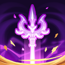 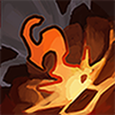 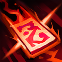 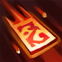 2영혼 소용돌이(주술)→
2영혼 소용돌이(주술)→ 5요기 폭발(파멸)→
5요기 폭발(파멸)→ 6번개 폭풍(파멸)→
6번개 폭풍(파멸)→
주술+파멸 광역 대표 빌드 · 번호는 시전 순서이고 4번 신내림이 궁극기예요 · 아이콘은 공식 도깨비 서고(출시 전 캡처) · 커뮤니티에서는 주파덱이라고도 불러요
② 절명+저격 단일(추천 975) 힐 칸 없이 암습을 둘째로 쓰는 단일 빌드예요. 주술을 섞은 185 추천 변형은 찌르기가 없으면 삼단 찌르기로, 살 날리기·부적 던지기가 없으면 기습·사격으로 바꾸라고 했어요. 커뮤니티 평은 저격이 재사용 대기시간이 늘어 절명의 하위호환이라는 쪽과 여전히 단일 최강이라는 쪽으로 갈리죠.
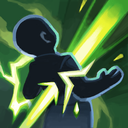 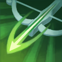 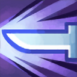 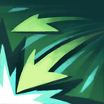 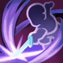 2암습(절명)→
2암습(절명)→ 3사격(저격)→
3사격(저격)→ 5내려찍기(절명)→
5내려찍기(절명)→
절명+저격 단일 대표 빌드 · 번호는 시전 순서이고 2번 암습이 궁극기예요 · 아이콘은 공식 도깨비 서고(출시 전 캡처)
③ 기만+강타 광역(추천 648) 개편 직후엔 극찬이 많았다가 선택 상자가 많이 든다는 후기가 이어졌어요. 힐은 생명의 흐름, 보호막은 방패 밀기 한 칸씩이고, 417 추천 변형은 핵심 6칸(기만 3·강타 2·부적 던지기)을 뺀 나머지 두 칸을 저레벨엔 연쇄 번개·영혼 소용돌이로 바꾸라고 했습니다.
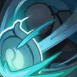 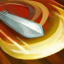 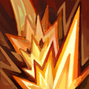 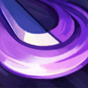 1회전하는 칼날(기만)→2생명의 흐름(헌신)→
1회전하는 칼날(기만)→2생명의 흐름(헌신)→ 6검기 폭발(강타)→
6검기 폭발(강타)→
기만+강타 광역 대표 빌드 · 번호는 시전 순서이고 1번 회전하는 칼날이 궁극기예요 · 아이콘은 공식 도깨비 서고(출시 전 캡처) · 커뮤니티에서는 누리덱·기강덱이라 불러요
④ 파멸·연타 노힐(추천 546) 노힐은 전투력이 높고 겹사가 없을 때 쓴다는 평이 있어요. 겹사는 같은 자리에 겹치는 사냥꾼을 말하는데, 등록자는 겹사가 들어와도 잘 먹지만 고투력 사냥터는 비추천이라고 적어서 평이 엇갈려요. 힐 칸 없이 궁극기 폭주를 끄고, 대검 찍기와 날카로운 얼음창·회전 난격의 기세 회복으로 유지한다고 했습니다. 파멸+강타 쪽 315 추천 빌드는 체력이 말리면 영혼 소용돌이를 방패 밀기나 생명의 흐름으로 바꾸라고 했어요.
1공간 결계(기만)→ 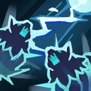 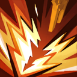 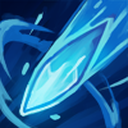 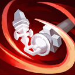 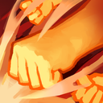 3번개 폭풍(파멸)→
3번개 폭풍(파멸)→ 8연쇄 타격(연타)
8연쇄 타격(연타)
파멸·연타 노힐 대표 빌드 · 궁극기를 꺼 둬서 번호가 8개예요 · 빌드 구성·순서는 깨비지지 기준(비공식 팬 사이트), 도술 아이콘은 공식 도깨비 서고(출시 전 캡처)
- 공간 결계(기만)가 상위 12개 중 9개에 들어 있네요.
- 영혼 소용돌이는 재사용 대기시간이 길어졌다며 빼는 등록자가 나왔어요.
- 힐 칸과 강인 칸이 각각 5개씩이라 힐 대신 강인 보호막이라는 대안이 보여요.
개편 후 24시간 동안 커뮤니티 평가는 어떻게 뒤집혔나요?
10월 21일 저녁엔 기만+강타 극찬이 많다가 10월 22일 새벽엔 파멸+강타·주술이 정답이라는 쪽으로 하루 만에 뒤집혔는데요, 아래는 전부 커뮤니티 의견입니다.
| 시각 | 커뮤니티 분위기 |
|---|---|
| 10월 21일 저녁 | 기만 계열이 몬스터를 몰아 잡기 좋다는 극찬 |
| 10월 22일 새벽 | 파멸이 정답이라는 쪽으로 이동, 선택 상자를 기만에 몰아 썼다가 후회한다는 글과 약팔이 빌드라는 비판 |
| 10월 22일 오전 | 파멸 50강 후기와 50강은 안 찍어도 된다는 반박 |
약팔이는 과장해서 따라 하게 만든다는 뜻의 말이에요. 이긴 쪽은 파멸·강타·기만의 공간 결계, 진 쪽은 기동 하나이고 저격·연타·헌신은 엇갈려요. 확정된 1티어는 없고 바이럴 의심 글도 있거든요. 힐은 1칸에 생명의 흐름 선호가 다수예요.
내 상황에 맞는 유형은 어떻게 고르나요?
이럴 땐 이렇게 골라 보세요.
- 기본 5칸이라면: 322개 모두 7~8칸(8칸 317개·7칸 5개) 빌드라 그대로 못 쓰니 수련장에서 직접 재 보는 게 좋습니다.
- 겹사가 잦다면: 파멸이 낫다는 글과 파멸도 무너진다는 글이 갈리죠.
- 보스·레이드로 넘어갈 땐: 단일 피해는 절명 계열이 낫다는 평이 일관돼요.
어느 쪽도 애매하면 수련장 측정값이 높은 쪽으로 정하는 게 제일 덜 후회해요.
개편 후 PvP 조합은 뭘 쓰나요?
깨비지지 PvP 전용 등록은 2건에 최고 추천 6뿐이라, 인기 상위 PvP 조합이라 부를 근거가 아직 없습니다.
| 구분 | 내용 |
|---|---|
| 공식 확정 | 척살은 한 대상을 노리는 PvP 특화 스타일이고 근접 무기 사거리가 1m에서 2m로 늘었네요(공식 라이브). 발동하면 3초 동안 상태이상·디버프에 면역되는 도술 불침 효과도 있어요(가이드 7834). |
| 깨비지지 정리 기준 | 정리 페이지에 PvP 공통 피해 배율 하향과 저격 PvP 하향이 있어요. 공식 라이브에서는 저격·절명을 직접 언급한 걸 못 찾았고 공지 원문도 못 열어, 팬 사이트 정리의 방향만 옮깁니다. |
| 커뮤니티 의견 | 절명 은신, 파멸 압승, 강인 덱이 재밌다는 한 줄 후기가 서로 엇갈리죠. |
초기화로 받은 도술 요령서 선택 상자는 어디에 쓸까요?
선택 상자는 쓴 요령서를 합친 수만큼 받는 거라, 커뮤니티에서는 당장 몰아 쓰기보다 나눠 쓰라는 의견이 다수랍니다.
공식 라이브(10월 17일 방송)에서 당분간 재초기화가 없다고 밝혔고, 10월 20일 라이브에서는 이전 경험을 기준으로 고르지 말고 바뀐 도술을 검토한 뒤 투자하라고 권했습니다. 강화가 스타일 단위로 오른다고 알려져 선택 상자는 스타일을 고르는 선택에 가까워요. 적용 범위는 인게임에서 확인하세요.
| 분배 안 | 내용 | 기대하는 점 | 걸리는 점 |
|---|---|---|---|
| 몬스터를 한 번에 정리하는 수준까지만 올리고 보관(다수) | 사냥은 몬스터를 한 번에 정리할 만큼만, 상자는 단일·보스용 보관 | 재조정돼도 고를 몫이 남아요 | 무과금은 파멸을 키우는 게 맞다는 반대가 있어요 |
| 광역 하나 + 단일 하나 | 광역 스타일과 단일 스타일에 나눠 투자 | 사냥과 보스를 같이 맡아요 | 스펙이 모자라면 단일에 먼저 쓰라는 글도 있어요 |
| 파멸 올인(소수) | 파멸을 50강까지 올려 번 엽전·단으로 나머지 육성 | 수급이 빨라진다는 논리예요 | 요령서가 많이 들어 다른 도술을 못 올린다는 반론이 있어요 |
선택 상자 분배 3안 · 전부 커뮤니티 의견이고 정답은 아니에요
각성에 상자를 써서 고를 몫이 줄었다는 글도 있고, 파멸·강타·연타·저격 도술 조각은 상인회 도경이 파니 상자를 아끼라는 조언도 나왔어요(공식 가이드 7988 10월 7일 기준, 개편 뒤 목록은 인게임 확인).
따라 하기 전에 뭘 확인하면 좋을까요?
수련장 허수아비로 내 피해량을 재 보면 따라 하기 전에 걸러지는 게 많아요.
- 도깨비 수련장 허수아비는 총 피해량·초당 피해량·도술별 점유율을 재 줘요(공식 가이드 7981).
- 도술 화면 오른쪽 위 선호 도술은 50레벨 이후 도사들이 많이 쓰는 도술이에요(공식 라이브).
- 도술 설정의 체력 조건은 힐 칸 빌드에 필요해요(공식 가이드 7834).
제 선호 도술 맨 위에는 〔파멸 계열 / 기만 계열 / 절명 계열〕 도술이 떠 있었어요.
자주 묻는 질문
Q. 제압과 척살 도술은 어디서 얻나요?
제압은 단과 새로 열린 만귀비경에서 얻고, 척살은 도사 수행록에서 조금 나오며 주 획득처는 공식 라이브(10월 20일) 기준 2주 뒤 차원 점령전의 핵심 보상이에요. 위 4유형엔 없는 스타일이라, 이쪽 조합은 획득처부터 챙겨야 해요.
Q. 새 상시 비경에서 돌려도 되나요?
전래동화 비경 아래 상시 비경 두 곳이 열렸고 권장 전투력은 16만과 19만이에요. 10월 22일 오전 점검에서 몬스터 등장이 손봐졌다는 후기가 돌아서, 효율 후기는 하루 만에 낡거든요. 위 사냥 4유형을 돌릴 사냥터를 고를 때 참고하세요.
Q. 레이드 단계별 입장 전투력은 얼마인가요?
공식 라이브 기준으로 3단계 15만, 4단계 24만, 5단계 60만이고 하루 도전은 10회예요. 입장 전투력은 스타일과 상관없는 공통 조건이라, 절명 단일로 가도 이 문턱을 먼저 넘어야 해요.
도깨비의세계 도술 조합 정리
저라면 선택 상자는 수련장에서 재 본 뒤 나눠 쓰는 쪽이에요. 하루 만에 순위가 뒤집혔고, 분배 3안 중에서도 보관하며 나누는 안이 다수였거든요. 기동 선택 상자 추가 지급은 이행 공지를 아직 못 찾았으니 공식 소식이 나오면 다시 정리해 올게요~
✔ 도깨비의세계 같이 보기 좋은 내용
· 도깨비의세계 도술 조합 추천 사냥·PvP 인기 빌드 4유형, 10월 21일 도술 초기화 전 10월 19일 기준 — 개편 전 빌드가 궁금하면
· 도깨비의세계 도술 조합 추천 유저 추천 빌드 7개, 암습 빌드 시전 순서와 도술 슬롯 해금 조건 — 암습 시전 순서가 궁금하면
· 도깨비의세계 직업 없다? 도술 스타일 12가지 4계열로 조합하는 법, 신식 개방 조건까지 — 12스타일 구조가 궁금하면
· 도깨비의세계 PvP 콘텐츠 4종 총정리, 낙화의 전장 차원점령전 차이부터 미혹의 정원 신기쟁탈전까지 — PvP 콘텐츠가 궁금하면
참고한 곳
· 공식 라이브 10월 20일 · 다시보기 공지
· 공식 도술 밸런스 조정 상세 안내(538521) · 점검 완료 안내(557308)
· 공식 가이드 7834 · 7981 · 7988
조회한 곳(팬 사이트·비공식)
· 깨비지지 도술 빌더 — 2026년 10월 22일 오전 조회
· 깨비지지 10월 21일 도술 밸런스 조정 정리
기준 시점 2026.10.22